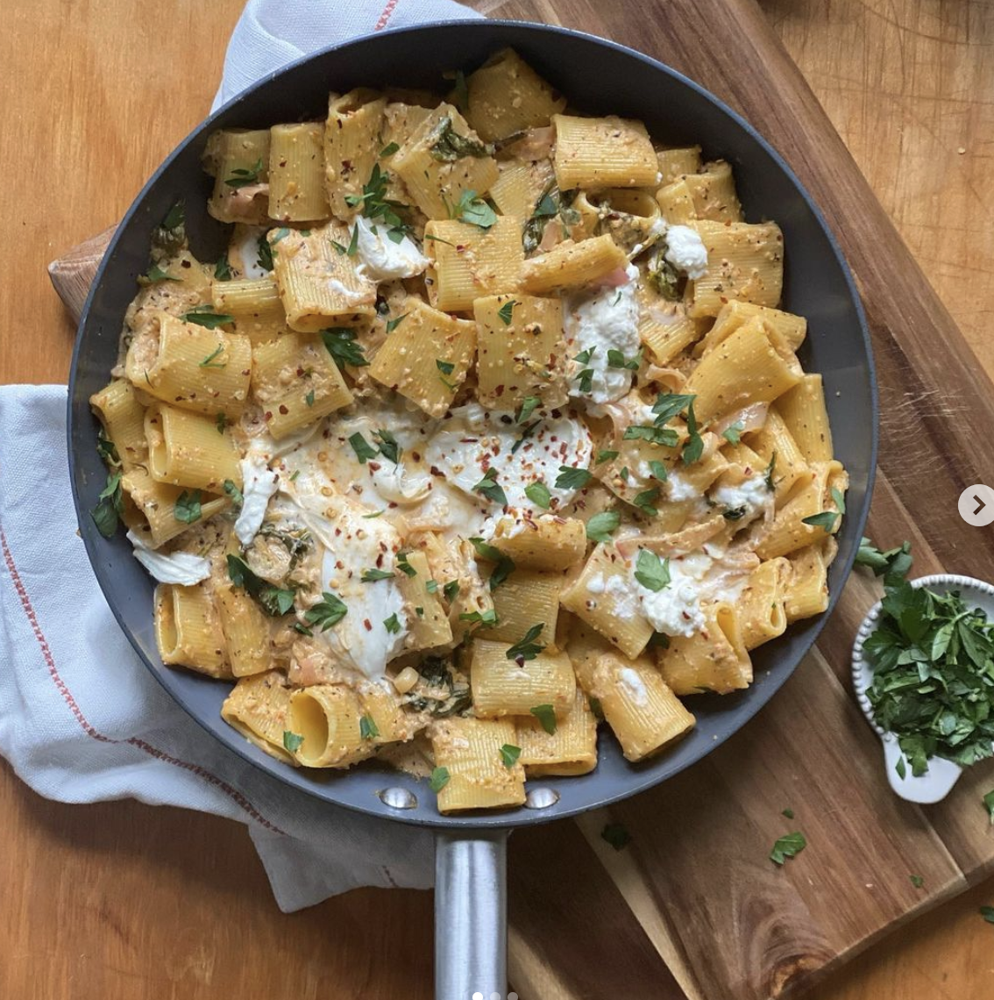

Sun-dried tomato and lemon pasta

Description
This creamy dish combines both the sweetness of the sun-dried tomato and acidity of lemons.
Ingridients
- 1tbsp extra virgin olive oil
- 3 large thinly sliced shallots
- 2tsp Italian seasoning
- 2tsp dried basil
- 1 tsp red pepper flakes (if you want it spicy)
- Zest of 1 lemon and juice From one lemon
- 2.8 oz sundried tomato paste
- 1 cup heavy cream
- 2 cups of mixed greens or spinach
- 1/2 cup Parmesan
- 1lb paccheri (alternative- fat rigatoni)
- Garnish: 1 ball of burrata.
Parsley for garnish
Steps
- Add oil to a large pan on medium to high heat. Add the shallots until translucent. At same time cook pasta coording to directions(dont forget to add salt to the water).
- Add seasoning, lemon zest and juice cook for 5 minutes.
- Add paste and cream, when it starts to bubble add mixed greens, Parmesan and pepper to taste
- Save 1/2 cup of pasta water and add it to the sauce.
- Add drained pasta to the sauce and toss untill well combined.
- For garnish add one ball of burrata and spread it. Top with parsley and red pepper flakes.